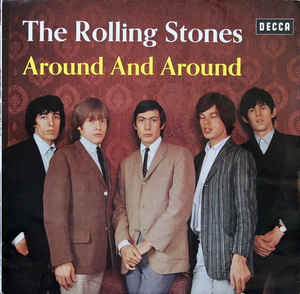

Discografia
INICIO
GALERIA
CONCIERTOS
Argentina
Brasil
CONTACTO
Album
Detalle
Canciones
The Rolling Stones
Lanzamiento: 16 de abril de 1964 Discográfica: Decca Records
Route 66
I Just Want To Make Love To You
Honest I Do
Mona
Now I've Got A Witness
Little By Little

Album
Detalle
Canciones
Around And Around
Lanzamiento: 30 de mayo de 1964 Discográfica: London Records
Around And Around
Good Times, Bad Times
It's All Over Now
Empty Heart
Confessin' The Blues
Not Fade Away